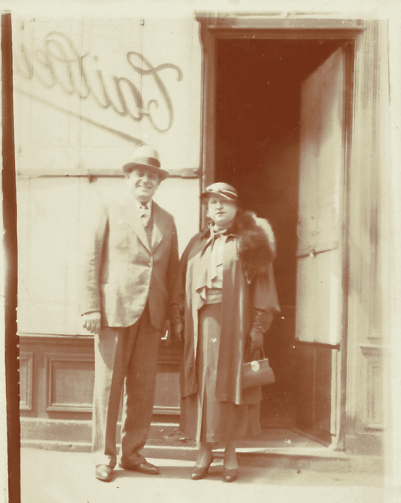
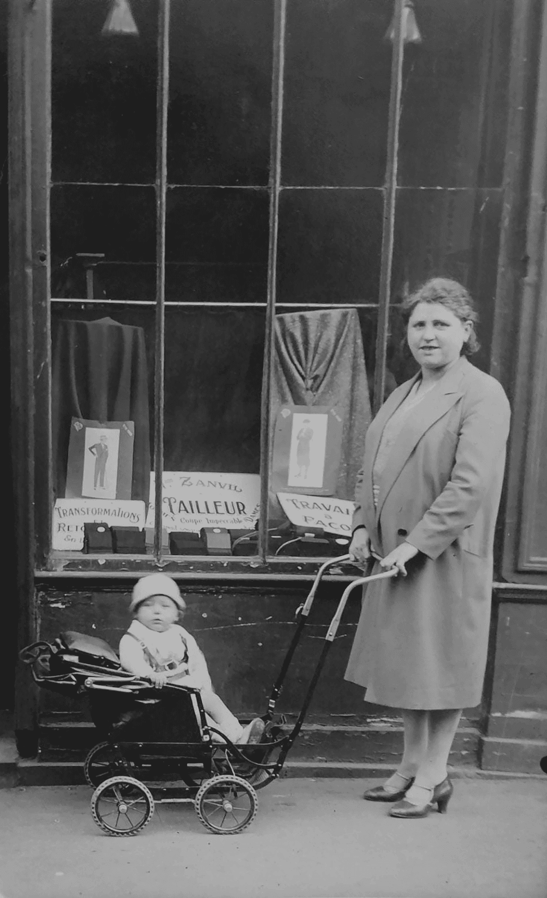

(Adrian) Bonjour, je m’appelle Adrian Aresteanu, je suis né en Roumanie et le rapport de parenté avec le sujet de votre travail, Pauline Zanvil, c’est que je suis son arrière petit neveu. Nos grands-mères étaient des sœurs et faisaient partie d’une fratrie avec 3 autres sœurs. C’est ça mon lien de parenté.
(Claire) Je m'appelle Claire Podetti et je suis professeur d'histoire dans un collège en région parisienne et j'ai été amenée avec mes élèves de troisième à écrire la biographie de Péril Zanvil. Après avoir rencontré Adrian au Mémorial de la Shoah et parce que je travaille pour le projet Convoi 77. Et il se trouve que Pauline a été déportée dans ce convoi et qu'un des un des critères que je retiens quand on travaille sur des biographies, c'est qu'il y ait des archives familiales. Donc c’est pour ça que le choix s’est porté sur Pauline.
g
(Adrian) Concernant la manière dont j'ai découvert l'histoire de Pauline, ça a été pour moi quelque chose d'inattendu. D'abord, c'est dû à un moment triste. C'était mon cousin, un autre arrière petit neveu, qui est décédé. Et en allant dans son appartement, j'ai découvert des lettres. Une archive que ses parents ou ses grands-parents tenaient. J'ai trouvé dans ces archives là, que je me suis mis à lire par curiosité, deux lettres avec le nom de Zanvil Pauline. Et je me suis dit “Mais qui est Pauline ?” parce que le nom de Pauline me disait quelque chose en moi et je reviens à un autre souvenir de ma jeunesse, de ma jeune enfance même, quand j'ai entendu parler d'une tante Pauline. Bon, comme pour tout le monde, “tante Pauline”, “tante Pauline”, j’ai jamais connu cette tante Pauline, donc je l'ai oubliée. Plus tard, j'ai entendu parler d'une tante Pauline, qui s'est mariée et qui était en France. Non plus j’ai pas fait grandement attention. Plus tard, j'ai entendu que tante Pauline est morte à Auschwitz. Je dis “Bah non, ça c'est pas possible” parce que les Roumains ne sont pas allés à Auschwitz. Les Roumains, ils sont allés dans les camps de concentration, dans les camps de travail en Transnistrie. Ou alors à travers des pogroms, ils étaient tués dans la rue, donc pas à Auschwitz. Donc encore une fois, je n'ai pas fait attention. Et là, en découvrant ces lettres, je me suis tout rappelé, tout ce que c'était dans ma jeunesse. Je me suis dit “Tiens, je vais voir ce que c'est”. Et j'ai téléphoné à une cousine qui est en Israël, dont la mère a maintenant 95 ans. Et elle m'a dit “Ah oui, Zanvil ! Bah Zanvil c’est le mari de ma tante.
Et Pauline, c'est Pauline.”
Et Pauline, c'est Pauline.”

(Adrian) Bon donc, ça y est, j'ai identifié et à partir de là, ça a commencé l'enquête. Dû à une curiosité, que je peux dire morbide, mais c'est une curiosité qui m'a poussée. Et donc avec mon épouse, on est revenu en France, et le premier chemin à faire, c'était à l'adresse qui était indiquée sur les lettres : boulevard des Poissonniers. Donc je suis allé là, j'ai vu l'adresse, j'ai vu qu'il y avait un magasin et quand même qui gardait l'esprit du métier de la tante Pauline, tailleur. Et ce magasin, c'est un magasin africain de tissus wax. Voilà, et il est toujours là.
g
(Adrian) Ensuite, je suis allé vérifier si c'est vrai qu'elle était morte à Auschwitz, au Mémorial de la Shoah à Paris. Et là, j'ai eu plein d'indices, effectivement comme quoi elle est morte, on m'a donné des documents et plus tard j'ai vu sur le mur, parce que le mur à l'époque on le réhabilitait. Donc avec ces documents là, comme quoi elle est morte, je me suis dit “Bon elle est morte à Auschwitz, mais où sont les enfants ? Où est le mari ?” Et c'est à partir de là qu'il y a une deuxième enquête.

(Adrian) “Bon elle est morte à Auschwitz, mais où sont les enfants ? Où est le mari ?” Et c'est à partir de là qu'il y a une deuxième enquête. Donc on est allé aux archives de Paris pour voir lors des recensements s' ils sont revenus après le recensement de 46, je crois qu'il y a eu un recensement en 46, est-ce qu’ils sont revenus à leur domicile. Mais non, ils ne sont pas revenus à leur domicile. J'ai demandé à d'autres cousins de vérifier en Israël s'ils ont directement immigré en Israël. Je n'ai pas d'éléments pour m'appuyer sur ça. Et finalement, j'ai regardé tous les documents et je les ai regardés plusieurs fois, plusieurs fois. Et le document que m'a donné le mémorial, indiquait là-bas une association de généalogie juive à Paris. Je me suis dit “Je vais essayer de prendre un rendez-vous”. J'ai pris un rendez-vous avec eux. Et là, il y avait tout, pratiquement : l'acte de mariage, les actes de décès des enfants, l'acte de décès de lui (Haïm). J'ai trouvé toute sa vie en France. J'ai remarqué dans les documents, dans les notes du Convoi 77, une différence entre la date de naissance. Moi j'avais un certificat, disons originel, mais une copie des archives de Roumanie. C'était le seul document que j'ai eu d'elle. Et la date ne correspondait pas. Elle s'est fait rajeunir de quelques années. Donc en allant corriger cette inexactitude, j'ai pris connaissance de la fameuse association Convoi 77, et celle qui s'occupe de Convoi 77 en France c’est Claire. Et c'est comme ça qu'on a pu se connaître. Et c'est à travers Claire et le Mémorial que j'ai aussi complété la recherche avec le dossier de spoliation, où là j'ai trouvé le calvaire qu'elle a enduré. Je n'ai pas une fibre d'écrivain, mais on peut sentir en lisant tout ça, ce qu'elle a vécu pendant quatre ans.
g
Alors je vais rebondir sur le convoi 77 et puis le dossier de spoliation. Le convoi 77, c'est un projet européen qui a été imaginé par Georges Meyer avec l'idée de sensibiliser les jeunes adolescents à l'histoire de la Shoah, autrement et davantage que simplement avec un simple cours d'histoire. Ce n’est pas du tout se substituer aux cours, mais c'est d'apporter au delà du cours une réflexion et puis une démarche différente. Elle est novatrice puisque quand on s'engage dans le projet, on donne aux professeurs qui s'engagent les toutes premières archives.
Donc, celles dont parlait Adrian, c'est le dossier de Caen. Mais peu importe, ce sont des dossiers qui ont été ouverts après la guerre et dans le cadre de Péril, c’est un dossier qui avait été ouvert par un monsieur Haiem dont Adrian ne savait pas qui il était puisque toute la famille pour le coup a disparu. Pauline est assassinée à Auschwitz mais son mari est mort pendant la guerre et ses deux enfants également donc il n’y avait plus personne de la famille en France. Et ce monsieur Haeim qu’on a découvert avec les élèves se trouve être un ami de son mari, de Haïm Zanvil, tailleur également et qui donc on ne sait pas pour quelle raison, ça c'est une des inconnues, mais en tout cas c'est lui qui demande à avoir la preuve qu'elle est bien décédée, avoir son acte de décès. Donc le projet convoi 77, se nomme comme ça puisque c'est le dernier grand convoi (donc les convois portaient des numéro) qui est parti de France vers Auschwitz le 31 juillet 1944, donc à un moment où les Allemands ont perdu la guerre. On est à quelques semaines de la libération de Paris et pourtant les Allemands continuent de déporter massivement 1306 personnes. Luis Brunner, qui dirige Drancy, a fait rafler tous les enfants des orphelinats de l'UGIF. Et on a des personnes de partout en France, dont Péril qui visiblement a été dénoncée. Car pourquoi elle se retrouve là alors qu'elle a passé toute la guerre à Paris en continuant de travailler ? On le voit à travers les archives. Très certainement une lettre de dénonciation. Elle est arrêtée et elle est prise dans ce convoi. Elle est âgée, tout est relatif, en tout cas elle, aux yeux des nazis, en arrivant à Auschwitz, elle est trop âgée pour pouvoir travailler. Donc elle est directement envoyée à la chambre à gaz.
g
(Claire) Moi, je suis enseignante. Dire que la Shoah ce n’est pas seulement la disparition des personnes, mais aussi des traces, des archives qui aujourd'hui nous permettraient de parler d'elle (Péril) et de montrer ça, c'est creux. En fait, je pense que c'est quelque chose qui fait sens. Plutôt que de parler de millions de personnes exterminées, dans la vie de Péril, il y a des choses pour lesquelles on ne sait pas.
g
(Claire) Le dossier de spoliation dont parle Adrian sont des documents de l'administration française, parce qu’une loi française, on parle de loi “d’aryanisation”. Ce sont des termes évidemment, avec tous les guillemets nécessaires qu'il faut mettre. L'idée, était que les personnes juives ne devaient plus posséder de biens, d'immeubles de rapport, c'est-à-dire de résidences secondaires, d'immeubles qui étaient louées, de boutique et ne devait plus être elle-même patron, donc diriger une petite boutique. Tout était saisi.
Dans ces cas-là, un administrateur était en charge de reprendre, pour péril, non seulement le lieu, mais aussi tout le matériel. On le voit dans les 90 pages du dossier, de façon extrêmement froide et je trouve que de travailler ça avec des élèves, c'est terrible parce qu'en fait, il s'agit d'hommes et de femmes. On ne la nomme jamais, c'est “la juive”. Et quand les élèves découvrent ça, et nous aussi, il y a un côté glaçant que des hommes aient pu écrire ça, des administrateurs, c'est à dire avec cette froideur de : on récupère les biens, on ne nomme pas la personne et son seul but et quand même, elle est un peu embêtante, cette personne, parce qu'elle s'oppose, elle fait de la rétention, elle ne veut pas partir et ça c’est glaçant.
g
(Adrian) L'aryanisation, ça s'est passé en Roumanie, on a appelé ça la roumanisation, en France peut-être la “francisation”, mais la roumanisation, c'est-à-dire tous les biens juifs, étaient roumanisés. Ils ont mis les affaires au nom des Roumains qui sont devenus propriétaires de ça. C'est les mêmes lois qui sont instaurées partout. Et autre chose que vous avez trouvé là bas, c'est que l'administration française était très, très carrée. L'argent de la vente était envoyé par Berkeley Bank – banque qui existe maintenant – en Allemagne. Donc tout est clair, tout est net.
g
(Claire) Alors pour être peut être un peu plus précis sur la loi d’aryanisation : en France on dit, on reprend plus les termes nazis, d’aryen… Elle a lieu en mars 41 en fait, et à partir de là les biens vont être saisis et tout de suite quelqu'un est nommé, un administrateur est nommé. Donc ça se fait vraiment comme ça. Et vous le voyez avec l'idée de se saisir des biens et de les revendre, de payer même son salaire. On voit que les administrateurs se sont dit : “Moi, je prends tant parce que j'ai travaillé tant de temps et on voit qu'ils font des rapports…”
g
(Claire) Les fiches Drancy sont très codées. En fait, quand une personne arrivait à Drancy, elle était enregistrée et on lui donnait un numéro. En haut de l'affiche, vous avez très souvent un numéro. 25 000 et quelque puisque c’est les numéros d'arrivée à Drancy. Donc à chaque personne, on lui donnait ça. On lui demande son nom, son adresse, on note les biens qu'elle a, si elle les donne, puisque l'idée c'était de ne rien emporter de valeur. Puis il y a marqué “CI valable jusqu'à” donc carte d'identité et le jour qui est mis, c'est le jour d'arrivée dans le camp de Drancy, puisque les papiers sont également saisis. De l'autre côté, il y a un B. Le B, veut dire “déportable immédiatement". La veille ou deux jours avant, on mettait ça sur les cartes. On déplaçait les personnes, il y avait des chambrées à Drancy et on mettait les personnes qui allaient être déportées le lendemain dans un lieu, dans une chambrée particulière, une cage d'escalier particulière et le lendemain ces personnes là étaient directement regroupées, emmenées en car à la gare de Bobigny, pour le cas de Péril et puis déportés ensuite de Drancy. Parfois, on mettait également le statut : “M2E” veut dire marié deux enfants. Alors je ne sais plus sur la carte de Péril, mais comme les enfants étaient morts, je pense qu'il n’y a plus ça. Ça ne doit pas être marqué. Tout est codé, vous voyez, pour aller vite, on remplit ça. Et là encore, on est dans cette froideur administrative de ces papiers qui aujourd'hui restent, de ces documents, mais qui, pour nous historiens, nous permettent de retrouver également des traces et de redonner vie. Puisque là, on dit les mots, cette froideur administrative. Le but du projet convoi 77 c'est aussi de redonner chair, vie. Toute cette vie d'avant qui a existé. Puis dire que ce que les nazis ont voulu effacer, alors, on le fait revivre.

(Léane) Donc nous on a le prénom de Peril, en Roumanie c’est Perla.
(Adrian) En Roumanie c’est Perla.
(Léane) Et Pauline aussi.
(Adrian) Et puis c'est comme toujours quand on transcrit les papiers, on fait des erreurs. Donc ici, elle est devenue Perle. Mais Pauline, c'est comme moi. Moi je m'appelle Adrian, mais on me disait en famille “Adi”. Donc c'est une sorte de diminutif pour dire “Oh qu’il est mignon”, voilà. Et puis la Roumanie était très francophile à l'époque, très très francophile. Donc les noms, beaucoup de noms donnés ont été francisés. Mais ça, c'est à l'intérieur de la famille. Moi, j'ai entendu parler de tante Pauline et Pauline est restée pour la famille.
(Adrian) En Roumanie c’est Perla.
(Léane) Et Pauline aussi.
(Adrian) Et puis c'est comme toujours quand on transcrit les papiers, on fait des erreurs. Donc ici, elle est devenue Perle. Mais Pauline, c'est comme moi. Moi je m'appelle Adrian, mais on me disait en famille “Adi”. Donc c'est une sorte de diminutif pour dire “Oh qu’il est mignon”, voilà. Et puis la Roumanie était très francophile à l'époque, très très francophile. Donc les noms, beaucoup de noms donnés ont été francisés. Mais ça, c'est à l'intérieur de la famille. Moi, j'ai entendu parler de tante Pauline et Pauline est restée pour la famille.
g
(Léane) Donc Pauline, Perle, Perla. Et d'où vient le nom de Peril ? C’est aussi une erreur ? (Adrian) Sinon, c'est certainement une erreur des autorités.
(Théo)Moi j'ai même vu Pieril sur le… il y a une photo du mur des noms au Mémorial de la Shoah où c'est écrit Pieril. Ah oui, merci, c'est encore oui et c'est c'est fou. En tout cas nous, ça nous a tous touchés.
(Claire) À 44, c'est marqué Zanvil Pieril. Oui, mais c'est étonnant hein.
(Léane) On sait pas si c'est la nouvelle version qui a été faite ou pas, mais c'est la photo qu'on avait dans le dossier.
+
(Théo)Moi j'ai même vu Pieril sur le… il y a une photo du mur des noms au Mémorial de la Shoah où c'est écrit Pieril. Ah oui, merci, c'est encore oui et c'est c'est fou. En tout cas nous, ça nous a tous touchés.
(Claire) À 44, c'est marqué Zanvil Pieril. Oui, mais c'est étonnant hein.
(Léane) On sait pas si c'est la nouvelle version qui a été faite ou pas, mais c'est la photo qu'on avait dans le dossier.
+
(Claire) Alors ça vaudrait le coup, j'y vais jeudi, je vais aller, je vais aller voir, jeudi. Non et c'est intéressant parce que c'est ça aussi ça, là où nous, on est très très attachés au prénom et puis à l'orthographe à l'époque, c'est vrai qu'il y a plein, plein, plein de variations. Donc je vais regarder. Il y a eu des erreurs évidemment sur les noms, mais forcément parce que comme il y a plein de documents, là, vous les avez vu. Et des archives avec des prénoms différents. Quel prénom on choisit ? Lequel est le plus fiable ? Parce que souvent, les personnes qui venaient parfois n'avaient plus de passeport ou perdu. Donc il y avait un acte de notoriété. Je crois que ça s'appelait. C'était fait chez un avocat et on disait qu'on était né à tel endroit de tel parent. Et c'est ça qui servait d'ailleurs, je ne sais pas si pour le mariage de Peril il y a ça. Et c'est ce qu'on présentait parce qu'on n'avait plus de papiers d'identité en fait. Donc c'est un acte de notoriété qui avait été fait chez un avocat et qui rendait qui officialisait en fait la naissance sur la déclaration. Et c'est peut être pour ça parce que tu dis “j’avais oublié moi, qu'elle s'est rajeunie de dix ans”,
(Adrian) Non pas dix ans
(Claire) mais quelques années
(Adrian) Oui, mais déjà elle est devenue plus jeune en arrivant en France parce que pas ce n'était pas lié à la déportation. Moi, au début, j'ai cru qu'elle avait baissé son âge pour ne pas être dans un certain seuil. Parce qu'à partir d'un certain seuil, 50 ans, c'était directement vers la chambre à gaz. Donc, si elle s’est rajeunie, j'ai pensé que c'était pour ça. Mais finalement, en lisant les documents que j'ai trouvés d'état civil, j'ai vu que d'emblée, elle s'est fait plus jeune.
-
(Adrian) Non pas dix ans
(Claire) mais quelques années
(Adrian) Oui, mais déjà elle est devenue plus jeune en arrivant en France parce que pas ce n'était pas lié à la déportation. Moi, au début, j'ai cru qu'elle avait baissé son âge pour ne pas être dans un certain seuil. Parce qu'à partir d'un certain seuil, 50 ans, c'était directement vers la chambre à gaz. Donc, si elle s’est rajeunie, j'ai pensé que c'était pour ça. Mais finalement, en lisant les documents que j'ai trouvés d'état civil, j'ai vu que d'emblée, elle s'est fait plus jeune.
-
g
(Claire) Oui, alors très souvent, en fait, les noms polonais notamment. Mais là Zan… son nom de famille en ville posait pas de problème. Mais les noms étaient francisés. Souvent, les gens étaient pas forcément lettrés. Et le fonctionnaire qui écrivait écrivait aussi à l'oreille de ce que leur disaient les gens. Donc on a dans plein de cas des noms qui ont deux, trois, quatre orthographes différentes des noms de famille et pour les prénoms, Très souvent, il y a l'idée aussi qu'adopter un prénom français, c'est plus facile pour l'administration. Donc je pense qu'il y a ça aussi parce que souvent, on trouve dans les personnes qui sont nées à l'étranger du convoi 77 une francisation du prénom.
g
(Claire) Dans la vie de Peril il y a des choses pour lesquelles on ne sait pas. Pourquoi elle venue en France ?
(Adrian) Ah bah là je sais pourquoi elle est venue en France. Elle est venue pour se marier.
(Claire) Elle s'est peut-être mariée, oui alors, mais est ce qu'elle l’a rencontré…
(Adrian) Non, non !,
(Claire) Oui alors c’est vrai mais une des hypothèses qu'on avait, c'est que peut-être elle l’avait rencontré avant ?
(Adrian) Non, non. Moi j’ai posais la question à ma tante qui a maintenant 92 ans. En fait, c'est sa nièce. Et elle m'a dit oui, oui, j'ai entendu et lui il a fait deux voyages en Roumanie pour la connaître parce que lui, il était veuf. En France sa femme est décédée. Et comme dans le passé, les mariages se faisaient par intermédiaire et il a entendu parler de Perle, de Pauline. En plus, c'était super bien pour lui parce que comme il était tailleur et elle était fille de tailleur, bah c'est tout bénef ! Donc ils ont fait tout ce qu'il faut. Ils se sont mariés et vraiment ils ont eu un mariage super, mais ça a été fait par ça. Il n’y a pas eu une rencontre fortuite comme on rêve mais… C'est l'époque !
(Adrian) Ah bah là je sais pourquoi elle est venue en France. Elle est venue pour se marier.
(Claire) Elle s'est peut-être mariée, oui alors, mais est ce qu'elle l’a rencontré…
(Adrian) Non, non !,
(Claire) Oui alors c’est vrai mais une des hypothèses qu'on avait, c'est que peut-être elle l’avait rencontré avant ?
(Adrian) Non, non. Moi j’ai posais la question à ma tante qui a maintenant 92 ans. En fait, c'est sa nièce. Et elle m'a dit oui, oui, j'ai entendu et lui il a fait deux voyages en Roumanie pour la connaître parce que lui, il était veuf. En France sa femme est décédée. Et comme dans le passé, les mariages se faisaient par intermédiaire et il a entendu parler de Perle, de Pauline. En plus, c'était super bien pour lui parce que comme il était tailleur et elle était fille de tailleur, bah c'est tout bénef ! Donc ils ont fait tout ce qu'il faut. Ils se sont mariés et vraiment ils ont eu un mariage super, mais ça a été fait par ça. Il n’y a pas eu une rencontre fortuite comme on rêve mais… C'est l'époque !

(Adrian) Pour l'anecdote, on a établi notre lieu de rencontre dans un restaurant qui s'appelle Perla, qui est juste à côté du mémorial de la Shoah. C'est drôle d'ailleurs, parce que je trouve que c'est chouette. Oui, oui, c’est un joli clin d'oeil. Et c'est là où on a commencé à parler de Pauline.
g
(Claire) Alors pourquoi c'est important un acte de décès? Et il est établi là après la guerre.
Parce que, en fait, il y a aucune trace. Ll'assassinat dans les centres de mise à mort. Ensuite, on perd ses traces et pour certaines familles, il n'y a plus rien, en fait. Pourquoi c'était important ? D'abord parce que pour ça, officialise une mort. Donc le départ du convoi, on rajoute trois jours à l'époque, on rajoute à cinq jours. C'est pour ça que je crois que dans le dossier de Péril, il dit qu’elle est décédée le 5 août. Aujourd'hui, on est sur le 3 août. On sait exactement quand est arrivé le convoi et ça permet d'abord, pour les historiens aussi, de comptabiliser combien de personnes aujourd'hui ont été assassinées ? Et puis, quand il y avait des survivants dans les familles, c'était un moyen aussi de prouver qu'une partie de la famille avait été déportée et de toucher une indemnité. Je pense à Ida Grinspan. Ses deux parents ont été assassinés à Auschwitz et quand elle revient, elle a quinze ans et elle n'a plus rien en fait. Et donc ça, ça lui a permis à Ida d'avoir ces indemnités qui n'étaient pas très importantes. Mais au-delà du fait de pouvoir faire le deuil pour certaines familles de se dire bon bah voilà, là il y a un acte de décès qui est aussi important, évidemment. Il y avait aussi la possibilité de demander ces indemnités.

(Claire) Alors, les documents, quels documents ? Quel est le document qui m'a beaucoup touchée ? Je ne sais pas pourquoi, c'est… Bon, moi je suis sensible aux photos et je trouve que c'est… C'est la photo où elle est devant la boutique avec le landau. Je trouve qu'elle est magnifique cette photo. D'abord parce que la boutique, si vous l'avez vue aujourd'hui, on la reconnaît parfaitement. Donc il y a un lien avec le présent et le passé. Et puis elle est là, dans une période heureuse en fait, qui a été éphémère, et j'aime bien moi. C'est vraiment l'image que je garde de Péril du travail et pour les élèves, ça a été beaucoup cette photo aussi, plus d'ailleurs que les photos où ils sont en vacances… Enfin, on suppose qu'ils sont en vacances, mais parce qu'ils sont plus âgés et que les enfants sont déjà décédés… Moi, j'aime vraiment cette photo. C'est vraiment le souvenir que j'ai gardé de ce travail.

(Adrian) Comme je vous ai dit la dernière fois, il y a sans arrêt quand on fait un travail de recherche, c'est le hasard qui intervient. Bon, le hasard, on le cherche, mais il intervient et ce n'était pas pendant mes recherches. C'était avant les recherches, avant que je sache que mon cousin est décédé. Donc, il y a cinq ans, on était chez des amis à Berck-sur-Mer, sur la plage… la photo sur la plage que vous avez vu ? Bon, on l'a fait nous aussi. Et au fond des lieux, il y avait l'hôpital d'ostéopathie de la Marine, là où c'était les petits-enfants qui étaient hospitalisés. Donc, dix jours après, j'apprends que mon cousin est mort, je retourne en Roumanie. Je retrouve les documents et je vois Berck-sur-Mer. Quelle coïncidence, Berck-sur-Mer, de nous retrouver là…! Il y a quelque chose de prémonitoire… je ne sais pas. Je ne saurais pas donner une explication, mais dans beaucoup, beaucoup de recherches qu'on fait, on tombe par hasard sur des noms, sur des choses…


(Claire) Alors ça, c'est vrai. Et c'est aussi ce qui fait l'originalité de ce projet. Pour revenir sur ce qu'est le Convoi 77, c'est-à-dire qu'on est, on est vraiment avec les élèves dans a la posture d'un historien d'une enquête, des vides et des creux, des preuves, mais aussi des documents qu'on va trouver et qui vont nous permettre d'en savoir un peu plus. Et je me souviens quand on a trouvé le fichier matricule, que là tu n'avais pas eu… de Haïm, on a su quand est-ce qu'il était arrivé en France puisqu'il avait en fait, et dans son dossier de naturalisation aussi, ça a été des documents qui nous ont permis d'avancer. Et ça, il y a une vraie satisfaction, c'est à dire, tout d’un coup on va re-découvrir des choses qu’on ne connaissait pas et c’est vraiment quelque chose d’intéressant tout comme montrer que l’histoire, c’est vraiment écrire par rapport à des archives c’est-à-dire qu’un historien quand il dit quelque chose c’est qu’il a trouvé des documents qui convergent, et qui lui permettent d’affirmer que Haïm effectivement est arrivé en France à telle date, et quand on ne le sait pas, on le dit. Et ça, je trouve que c'est vraiment hyper important de travailler ça. Par rapport aujourd’hui aux fake news, par rapport à tout ce qu'on peut instrumentaliser ?
g
(Adrian) Il y a autre chose à laquelle je remercie Claire. Je remercie Claire à plein de choses, mais j'ai trouvé une référence dans le travail fait par les élèves. Une référence concernant un petit stagiaire qui faisait un stage dans l'atelier de couture et qui parle d'eux. Je ne savais même pas ! Donc j'ai vu la référence, il faut que je cherche le livre (-Claire- je l'ai il faut que je te le donne. -Adrian- d'accord ok.) Je suis curieux de savoir quelle était sa vie parce que ce Monsieur raconte dans son livre quelque chose, quelques événements qu'il a eus dans cette famille. Et puis moi, j'ai cherché également des livres qui peuvent me raconter ce qui s'est passé dans le camp de Drancy, la veille du départ ou des souvenirs de ceux qui sont revenus pour me dire ce qui s'est passé à l'arrivée à Auschwitz. Enfin, on s'imagine, mais une description de ça me sera bien utile comme ça, je vais finir un dossier avec des documents Zanvil.
+
+
(Claire) C’est ce qu'on croise dans le convoi 77, parce que maintenant il y a un peu plus de 500 biographies qui sont sur le site et on a justement, je pense à Léo Coon qui était dans le convoi, qui est arrivé en juillet, qui était quelqu'un qui s'occupait des Éclaireurs israélites de France et qui a fait chanter les enfants. Il explique lui quand il arrive dans le camp de Drancy, qu’il y a énormément d'enfants sans parents puisque les parents ont été déportés avant, parfois plusieurs années avant, c'est les enfants des orphelinats et donc il va s'occuper d’eux, les faire chanter et il explique ça. Et je pense que dans les biographies, ça sera aussi une matière après dans le convoi 77, d'aller chercher dans les biographies pour réécrire ce qu'a été Drancy à travers quelques témoignages qu'on a. On n'a pas toujours des témoignages, mais parfois on a des témoignages. Effectivement, des gens qui sont survivants et de croiser toutes ces informations là. Parfois, on a dans certains dossiers des lettres qui disent moi, j'étais avec tel déporté, on était ensemble. Donc tout ce matériau là aussi va servir à réécrire d'autres histoires. Et c’est ce que tu dis Adrian, c'est-à-dire, non seulement de Drancy puisqu’il y a eu des personnes ensemble, mais aussi de l'arrivée du train. Le père de Georges Mayer explique que dans le wagon où était son père, il y a eu une tentative d'évasion. Je crois que c'est dans le wagon de son père où il me semble, enfin, en tout cas, c'est tout ça, tous ces matériaux là, qu'on va essayer de retravailler après.
-
-
g
(Yasmine) Selon vous, pourquoi dans votre famille, on ne vous a jamais vraiment parler de cette femme ? Pourquoi…?
(Adrian) C'est une question que je me suis posée quand j'ai commencé à faire des recherches. Donc ce sont des questions que je me suis posées assez tard. Donc il y a cinq ans, pourquoi j'ai pas parlé avec mes parents ? Pourquoi mes parents ne m'ont pas parlé ? Pourquoi moi, je n'ai pas peut être été à l'écoute de ce qu'ils me disaient, Parce que ils me parlaient de temps en temps. Mais ça entre par ici, Ça se fait parfois. Donc je faisais pas attention. Et pourquoi j'ai pas fait attention ? Et finalement, je me suis - j'ai vu que la plupart des gens ont évité de parler de cette période là. Pour ne pas effrayer peut-être les enfants. Puis peut être les enfants n'étaient pas trop intéressés parce que c'est notre étape de la vie et notre société.
(Adrian) C'est une question que je me suis posée quand j'ai commencé à faire des recherches. Donc ce sont des questions que je me suis posées assez tard. Donc il y a cinq ans, pourquoi j'ai pas parlé avec mes parents ? Pourquoi mes parents ne m'ont pas parlé ? Pourquoi moi, je n'ai pas peut être été à l'écoute de ce qu'ils me disaient, Parce que ils me parlaient de temps en temps. Mais ça entre par ici, Ça se fait parfois. Donc je faisais pas attention. Et pourquoi j'ai pas fait attention ? Et finalement, je me suis - j'ai vu que la plupart des gens ont évité de parler de cette période là. Pour ne pas effrayer peut-être les enfants. Puis peut être les enfants n'étaient pas trop intéressés parce que c'est notre étape de la vie et notre société.
g
(Théo) En parlant des écrits, on aurait bien aimé que vous lisiez des lettres qu'elle a écrit en roumain.
(Adrian) Je ne peux pas vous lire mais un petit passage donc le début. Je ne peux le lire avec les fautes qu’elle a écrites, je le lis normalement.
lecture en roumain
(Adrian) Je ne peux pas vous lire mais un petit passage donc le début. Je ne peux le lire avec les fautes qu’elle a écrites, je le lis normalement.
lecture en roumain

(Adrian) C'était très dur de lire. Moi, je n'ai pas pu le lire. Je n'ai pas pu le lire parce que c'était une femme qui n'a pas fait des études et elle écrit comme elle entend. Donc, c'est ce qu'elle a appris, c'était l'alphabet, comment l'écrire. Mais elle écrit comme elle l'entend. Vu qu'elle a vécu en France. Elle utilise aussi des mots français écrits à la façon roumaine. Donc pour moi, ça a été extrêmement fatiguant de le lire. Et cette tâche là, c'est Claire qui s’en est occupé. Avec une étudiante de sciences Po qui se trouvait en master et qui était roumaine
venu en France. Et c'est elle qui a traduit en disant que c’était extrêmement compliquée et qu’il y avait sûrement un peu de Hongrois, un peu de yiddish et un mélange de tout ça.
(Pas de hongrois mais surtout yiddish) D'ailleurs, il le dit le petit jeune qui travaille chez eux. Il dit qu'elle a pas lu Shakespeare, de façon un peu humoristique.
(Mais, très difficile)
g
(Claire) Et si tu traduisais là juste au moins les deux premières phrases ?
(Adrian) “Mes chers sœurs, beau-frères et neveux. J'ai reçu votre lettre et avec grande difficulté, je vous réponds. Avec la mort de mon père, Iancu, il faut savoir que nous on va pas arriver à avoir son âge. Et lorsque nous allons mourir, je crois pas… je crois pas que la souffrance…que…” Très difficile, très difficile ! Je préfère ne pas dire que de traduire ça.
(Adrian) “Mes chers sœurs, beau-frères et neveux. J'ai reçu votre lettre et avec grande difficulté, je vous réponds. Avec la mort de mon père, Iancu, il faut savoir que nous on va pas arriver à avoir son âge. Et lorsque nous allons mourir, je crois pas… je crois pas que la souffrance…que…” Très difficile, très difficile ! Je préfère ne pas dire que de traduire ça.
g
(Claire) Et est ce qu'il n'y a pas aussi, Adrian, sur le fait que donc ta famille est restée en Roumanie alors qu'il y a eu des massacres énormes ? Est ce que la judéité, justement, est ce qu'on a occulté ça au moment de l'époque communiste ? C'est à dire qu’on était d'abord roumain et donc qu’on ne parlait pas non plus ?
(Adrian) Oui, ça a été occulté, oui, ça a été occulté, mais ça a été occulté depuis assez longtemps. Quand ils ont senti qu’il aurait un changement de politique, ceux qui ont ressenti sont ceux qui sont partis.
+
(Adrian) Oui, ça a été occulté, oui, ça a été occulté, mais ça a été occulté depuis assez longtemps. Quand ils ont senti qu’il aurait un changement de politique, ceux qui ont ressenti sont ceux qui sont partis.
+
Ils sont partis en France où ils n’ont pas eu de chance. Et puis il y avait aussi une autre chose. Les juifs qui sont restés, qui ont échappé aux pogroms, la plupart ont adhéré au mouvement socialiste, socialiste communiste, bon, qu'ils étaient en illégalité ou qu'ils étaient non illégal, mais ils ont adhéré. Donc quand les communistes sont venus au pouvoir, ils étaient là, beaucoup d'entre eux avaient de l'instruction, donc ils ont fait partie des instances dirigeantes du pays. Quelque temps après, il y a eu une fibre nationaliste qui est intervenue au rang du Parti communiste. Donc pourquoi les juifs ? Parce qu'il n'y en avait pas d'autre. Donc ils ont commencé à leur trouver des défauts ou bien éloignement de la part de la ligne du parti ou tendance bourgeoise ou tendance. Donc ils ont commencé à les rétrograder à tel point de les faire demander de quitter la Roumanie. Donc au début, ils ont quitté la Roumanie. Officiellement, ils ont pu et il y a un livre de Sonia de Villard, la journaliste, très, très intéressant parce qu'elle est d'origine roumaine. Ses parents étaient d'origine roumaine. Ensuite s'est développé un commerce, un commerce avec les juifs et les juifs et les Allemands. Mais les juifs c'était majoritaires. Et pour pouvoir quitter la Roumanie, l'État les vendait. Par exemple, j'ai de la famille qui est là à Paris et qui a été rachetée pour 50 moutons de race. D'autres pages des cochons de race. D'autre part, des installations pour faire de l'huile, donc des affaires comme ça, des vaches, des trucs comme ça.
(Claire) Et dit comme ça aujourd'hui, et ça dans les années 70 et c'était ça les échanges. C’est qu’on faisait entrer en Roumanie du matériel agricole contre des personnes qui sortaient. En fait, il y avait une sorte de marchandage. Et ça que je ne connaissais pas du tout.
(Adrian) Moi non plus, moi non plus, je ne savais pas. Mais par contre, ce livre là m'a permis de comprendre beaucoup de choses concernant ma famille.
(Claire) Mais c'est aussi qu'en Roumanie, mais tu l'as bien dit et en fait, ça aussi, c'est intéressant de montrer ça aux élèves. En France, on a accès à toutes les archives, tout est classé et il y a un délai à respecter. Mais on peut. On a eu les dossiers de spoliations, on a eu le fichier matricule, on a eu le dossier de naturalisation. En Roumanie, elles existent les archives, mais il n'y a pas d'accès parce que soit elles ne sont pas encore classées, soit de la corruption.
(Adrian) Je préfère la corruption, mais ça non plus, même la corruption. Je n'arrive pas à avoir de documents, mais je prie au bon Dieu de tomber sur une personne corrompue pour qu'elle me livre des documents. Mais je ne trouve pas. Et ça, une démocratie vit aussi sur l'accès aux archives. Je cherche toujours, je cherche et le jour où je trouverai bien, écoute, je donnerai une fête. Mais apparemment, ces histoires d'archives, il n'y a pas que en Roumanie.
(Claire) Non, bien sûr, on a les mêmes difficultés en Grèce, en Autriche, c'est compliqué parce que, nous, on est dans les archives civile depuis la Révolution française et dans beaucoup de pays ce sont les communautés qui ont gardé alors pour x raisons. En Grèce par exemple, la communauté juive de Salonique refuse si c'est pas un descendant parce que pour eux c'est tellement important d'avoir pu garder ces archives qu’il ne faut pas que ce soit n'importe qui, mais de fait, elles sont quasiment inaccessibles. Même si on missionne un historien, ce n'est pas possible. Donc ça limite aussi parce que les archives, c'est quand même pour les historiens, c'est essentiel Et on voit bien, une des premières choses qu'a fait Poutine, c'était d'interdire le mémorial. Là où justement il y a les archives du goulag, etc Et en rendant impossible pour les familles d'aller chercher là dedans. Donc ça, des archives, c'est tellement important. Et nous, on a la chance d'être dans un pays où tout est ouvert.
-
(Claire) Et dit comme ça aujourd'hui, et ça dans les années 70 et c'était ça les échanges. C’est qu’on faisait entrer en Roumanie du matériel agricole contre des personnes qui sortaient. En fait, il y avait une sorte de marchandage. Et ça que je ne connaissais pas du tout.
(Adrian) Moi non plus, moi non plus, je ne savais pas. Mais par contre, ce livre là m'a permis de comprendre beaucoup de choses concernant ma famille.
(Claire) Mais c'est aussi qu'en Roumanie, mais tu l'as bien dit et en fait, ça aussi, c'est intéressant de montrer ça aux élèves. En France, on a accès à toutes les archives, tout est classé et il y a un délai à respecter. Mais on peut. On a eu les dossiers de spoliations, on a eu le fichier matricule, on a eu le dossier de naturalisation. En Roumanie, elles existent les archives, mais il n'y a pas d'accès parce que soit elles ne sont pas encore classées, soit de la corruption.
(Adrian) Je préfère la corruption, mais ça non plus, même la corruption. Je n'arrive pas à avoir de documents, mais je prie au bon Dieu de tomber sur une personne corrompue pour qu'elle me livre des documents. Mais je ne trouve pas. Et ça, une démocratie vit aussi sur l'accès aux archives. Je cherche toujours, je cherche et le jour où je trouverai bien, écoute, je donnerai une fête. Mais apparemment, ces histoires d'archives, il n'y a pas que en Roumanie.
(Claire) Non, bien sûr, on a les mêmes difficultés en Grèce, en Autriche, c'est compliqué parce que, nous, on est dans les archives civile depuis la Révolution française et dans beaucoup de pays ce sont les communautés qui ont gardé alors pour x raisons. En Grèce par exemple, la communauté juive de Salonique refuse si c'est pas un descendant parce que pour eux c'est tellement important d'avoir pu garder ces archives qu’il ne faut pas que ce soit n'importe qui, mais de fait, elles sont quasiment inaccessibles. Même si on missionne un historien, ce n'est pas possible. Donc ça limite aussi parce que les archives, c'est quand même pour les historiens, c'est essentiel Et on voit bien, une des premières choses qu'a fait Poutine, c'était d'interdire le mémorial. Là où justement il y a les archives du goulag, etc Et en rendant impossible pour les familles d'aller chercher là dedans. Donc ça, des archives, c'est tellement important. Et nous, on a la chance d'être dans un pays où tout est ouvert.
-
g